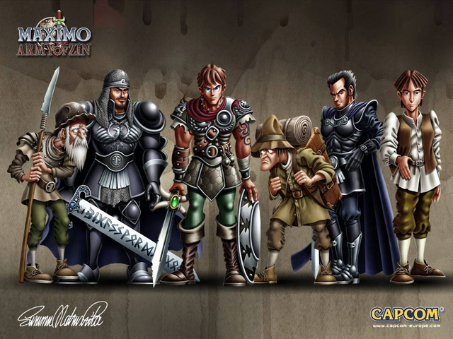

A história do jogo surge na sequência do Maximo : Ghosts to Glory , com Maximo ainda à procura de seu amor perdido , Sophia . Ele é novamente acompanhado por Grim (a Grim Reaper ) . No entanto, sua busca é interrompida quando uma série de criaturas mecânicas começar a atacar aldeias e matar o povo aldeia . Estas criaturas são o Exército de Zim , um antigo exército alimentado por almas perdidas , que foram supostamente trancadas no cofre do Castelo Hawkmoor após a última batalha com eles há 500 anos . No entanto, eles estão agora livres , devido às ações do senhor da guerra misterioso, Lord Bane.
